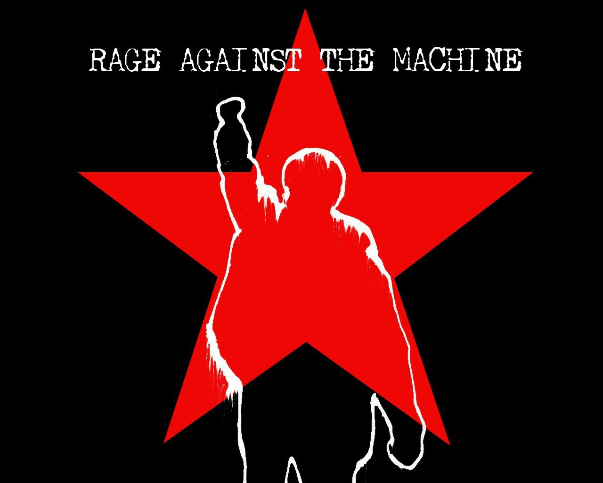

Image One

Image Before
Image After
What I did:
- Used Black Paint Brush tool to hide band name
- Used Red Paint Brush tool to hide band name
- Used Spot healing tool to touch up image
- Added Photograph of musician Playing
- Added in closed fist image
- Placed image into main poster
Image Two
Image Before
Image After
What I did:
- Used Paint Bucket tool to change color on image
- Placed closed fist image onto the cow
- Used Paint Brush to clean up around words "Gwinnet Count Fair
- Used Pencil tool to change color of words from yellow to red
- Added star image to cow and people
- touch up star colors to make them darker blue and red
- Added a plastic filter to the image